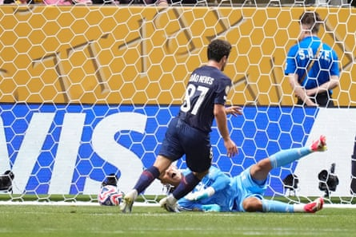

There were two minutes of Inter Miami’s Club World Cup left and the cameras were out in Atlanta. Here at last was the moment many had come for, one that didn’t matter as far as the match was concerned but that felt almost bigger than all that went before, a comment perhaps on this competition and the dimension of the man everyone was watching now as ever. Lionel Messi stood outside the area, a little to the right, the ball at his feet, a wall built before him. Paris Saint-Germain had been 4-0 up for an hour and his team were long since defeated but maybe he could depart his way, leaving something else to remember him by.
He took a step back, ran forward in that familiar way and curled the free‑kick into the bodies dressed in blue. This time it wasn’t to be; this time, reality was something else, implacably imposed by the European champions. The day before, Javier Mascherano admitted his Miami side had not really expected to get the chance to play this game and when it came to it PSG proved the coach right.
Not until the second half of this match, by which time they had already conceded four, were Miami really given the chance to even participate here.
Instead, Luis Enrique’s team took them apart, as they have many others this season – two from João Neves, one from Achraf Hakimi and an own goal from Tomás Avilés before half-time meant they eased into the quarter-finals.
From the kick-off, Luis Enrique’s side booted long towards the corner and straight out of play, giving the ball to their opponents for the first and pretty much the last time. It was not just that PSG were a goal up on 5min 4sec or that they had all the ball. In fact, they didn’t, by their standards: 73% felt quite low, and PSG did respond a bit in the second half. It was not that they took 19 shots, that they scored four in the end, the score never giving their opponents the illusion of hope, it was something simpler – just an overwhelming and, in truth, unsurprising superiority.
Football offers a “What if?” but this result was as expected, the game essentially an expression of what it actually is. No offence, just a reality: a club with a budget 15 times the size of the other; the best team in Europe against another that’s not the best in Major League Soccer and whose appearance in this competition was engineered by Gianni Infantino; the youngest, most dynamic, well-drilled side there is against some who were the best once but now watched these athletes fly around in front of them. In front, behind, to the side of them: PSG’s players were everywhere. Inter’s could hardly get in the game.
By the break Messi had had just 14 touches, Luis Suárez 17. But a better measure was what was happening in the middle. Sergio Busquets had completed 10 passes, Fede Redondo 12. PSG were four up by then, all scored with a clinical simplicity; if there were not more it was because there didn’t need to be.
João Neves gives PSG the lead.Photograph: Jose Breton/NurPhoto/Shutterstock
Neves had headed in the first, dashing on to a free-kick from behind an Inter defence that didn’t see him and didn’t look for him. A second, by Fabián Ruiz on 15 minutes, was ruled out for offside but had been almost as easy. Hakimi was blocked from close range, PSG finding little resistance, before Vitinha’s volley was stopped by Oscar Ustari and Khvicha Kvaratskhelia curled wide. When on 24 minutes Inter did advance a bit, it felt as much like a releasing of the pressure as an actual attack.
Soon after that a neat Messi touch led to Telasco Segovia delivering into the area. It was half an hour in and it was the first time. The game also went back to normal, Nuno Mendes having one shot cleared off the line.
Yet it was only one goal and the pace slowed, only for PSG to suddenly burst into life again at the end of the half, bringing three goals in six minutes. Busquets was robbed for the first, Ruiz rolling across for Neves to side-foot into an empty net to make it 2-0. Avilés then put a cross into his own net as PSG picked Inter apart again. Then Vitinha’s pass sent Bradley Barcola dashing in on another diagonal to find Hakimi. The first shot flew off the bar but the second was finished off.
At half-time, Hakimi went off with Suárez and it was easy to imagine a conversation that said something like: that’ll do now . And it would.
Miami played a bit in the second half, as much as they were allowed to. There were some shots, some moves, Messi had a header saved by Gigi Donnarumma, and then his moment, something for the montage, the moments, the mobiles held up, but this was done. It had been from the start.